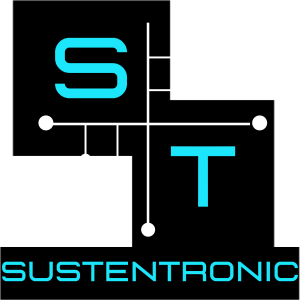

QUEM SOMOS?Somos alunos do ensino médio da escola SENAC - Pindamonhangaba e criamos a empresa Sustentronic. A Sustentronic é uma empresa de recolhimento, restauração e comércio de materiais eletrônicos provenientes de computadores velhos ou sem uso. A nossa empresa trabalha sobre os princípios de reciclagem e sustentabilidade. NOSSO OBJETIVONosso objetivo é dar o descarte correto aos materiais eletrônicos que não podem mais ser utilizados. Os materiais que puderem ser restaurados, serão disponibilizados com um preço acessível em nosso site. |
 |